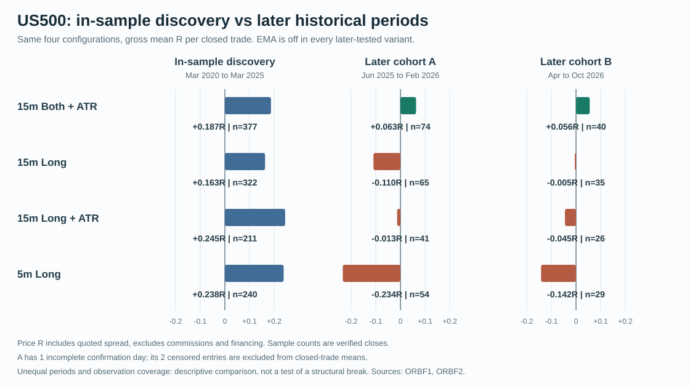

ORB Setup and Filters
Another opening-range breakout study: define the setup, compare range and filter choices, then carry frozen candidates into later historical data.
No candidate promoted. Later results weakened, the remaining positive margin was sensitive to costs, and the available evidence did not establish positive expectancy.
Read the study